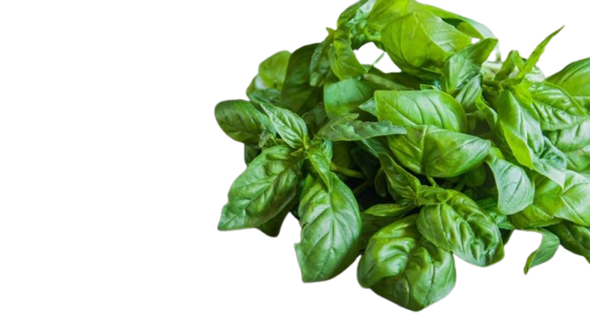
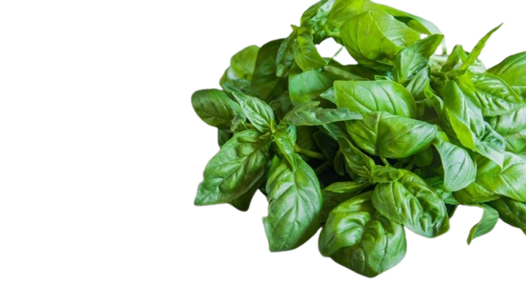

ALBAHACA
 

Descripción morfológica
La albahaca (*Ocimum basilicum*) es una planta herbácea anual perteneciente a la familia Lamiaceae. Es conocida por su aroma intenso y sus hojas comestibles, ampliamente utilizadas en la gastronomía mundial.
Suele alcanzar una altura de 30 a 60 cm. Posee tallos cuadrangulares, ramificados y ligeramente vellosos. Sus hojas son opuestas, ovaladas, de bordes lisos o levemente dentados, y de color verde brillante. Estas hojas contienen aceites esenciales responsables de su fragancia y sabor característicos.
Las flores aparecen en espigas terminales durante los meses cálidos. Son pequeñas, blancas o rosadas, y atraen polinizadores como abejas y mariposas. Toda la planta desprende un olor fresco y penetrante, especialmente al frotar sus hojas.
Distribución y hábitat
Originaria de regiones tropicales de Asia, especialmente de la India, la albahaca ha sido cultivada desde la antigüedad en diversos continentes. Hoy en día, se cultiva ampliamente en Asia, Europa, América y África, tanto en jardines como en macetas urbanas.
Prefiere climas cálidos y soleados, con temperaturas entre 20°C y 30°C. No tolera heladas. Crece mejor en suelos fértiles, bien drenados y ricos en materia orgánica. Necesita riego frecuente pero sin encharcamientos.
Se adapta bien a huertos urbanos, terrazas, balcones y ambientes interiores con buena luz. En cultivos agroecológicos se asocia con otras plantas por su capacidad repelente natural.
Ciclo de vida y reproducción
La albahaca tiene un ciclo de vida anual, lo que significa que germina, crece, florece y muere en un solo año. En climas tropicales puede comportarse como perenne si se le brinda cuidado continuo.
Se reproduce principalmente por semillas, las cuales germinan en 7 a 14 días. También puede multiplicarse por esquejes: ramas cortadas que, al colocarse en agua o tierra húmeda, desarrollan raíces.
Florece en verano. Para prolongar la vida de la planta y fomentar la producción de hojas, se recomienda cortar las flores antes de que se desarrollen completamente.
Usos principales
🌿 Culinarios: La albahaca es un ingrediente clave en la cocina mediterránea, especialmente en platos italianos como el pesto, ensaladas caprese, pizzas y salsas. También se emplea en cocinas asiáticas, especialmente en Tailandia y Vietnam.
🌿 Medicinales: En la medicina natural, se utiliza como digestivo, antiinflamatorio, antiespasmódico y relajante. Sus infusiones se usan para aliviar el estrés, el insomnio y los problemas gástricos leves.
🌿 Aromáticos y cosméticos: El aceite esencial de albahaca es utilizado en perfumería, jabones y lociones. Su fragancia fresca y herbal también se aprovecha en aromaterapia para estimular la concentración y reducir la fatiga mental.
🌿 Ecológicos y agrícolas: Es una planta repelente natural de insectos como mosquitos, moscas blancas y pulgones. En agricultura ecológica se cultiva junto a tomates, pimientos o lechugas para protegerlos de plagas.
Curiosidades y datos culturales
El nombre “basilicum” proviene del griego basilikón, que significa “real” o “regio”, lo que refleja la alta estima que esta planta tenía en la antigüedad.
En la India, la variedad sagrada llamada “tulsi” es considerada una planta protectora y se cultiva en los patios de los hogares como símbolo de pureza. En Europa medieval, se usaba en rituales religiosos y se creía que protegía del mal de ojo.
En América Latina, es común escuchar que la albahaca “atrae el dinero y la buena suerte” si se cultiva cerca de la puerta principal del hogar.
Además, la albahaca es una planta modelo en estudios botánicos por su capacidad de producir aceites esenciales y por su rápida respuesta al entorno.
Ficha botánica
| Nombre común | Albahaca |
|---|---|
| Nombre científico | Ocimum basilicum |
| Reino | Plantae |
| Filo | Magnoliophyta |
| Clase | Magnoliopsida |
| Orden | Lamiales |
| Familia | Lamiaceae |
| Género | Ocimum |
| Tipo de planta | Herbácea anual |
| Altura | 30 a 60 cm |
| Reproducción | Sexual (semillas) y asexual (esquejes) |
| Usos | Culinarios, medicinales, ornamentales, ecológicos |